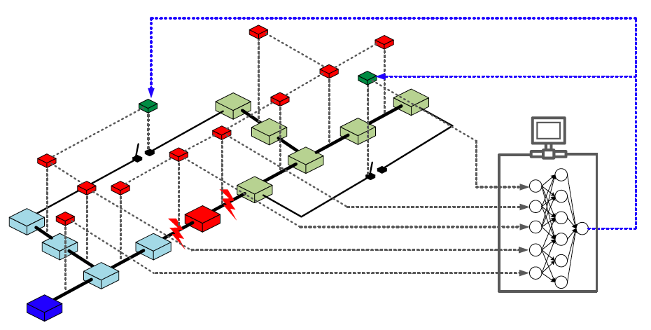
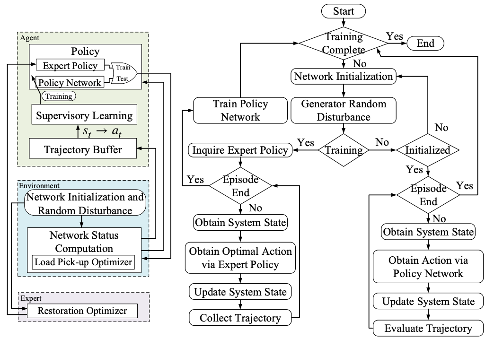

Home¶
IntelliHealer: An imitation and reinforcement learning platform for self-healing distribution networks. IntelliHealer uses imitation learning framework to learn restoration policy for distribution system service restoration so as to perform the restoration actions (tie-line switching and reactive power dispatch) in real time and in embedded environment.
It is worth mentioning that the imitation lealrning framework acts as a bridge between reinforcement learning-based techniques and mathematical programming-based methods and a way to leverage well-studied mathematical programming-based decision-making systems for reinforcement learning-based automation.
 {kind=link}
{kind=link}
Such embeddable and computation-free policies allows us to integrate the self-healing capability into intelligent devices. A polit project conducted by the S&C Electric can be found here. For details of this work, please refer to our paper at arXiv or IEEE.
Features¶
IntelliHealer proposes the imitation learning framework, which improve the sample efficiency using a mixed-integer program-based expert compared with the traditional exploration-dominant reinforcement learning algorithms.
{kind=link}
IntelliHealer proposes a hierarchical policy network, which can accommodate both discrete and continuous actions.
{kind=link}
IntelliHealer provides an OpenAI-Gym environment for distribution system restoration, which can be connected to Stable-Baselines3, a state-of-the-art collection of reinforcement learning algorithms. Currently, the Gym environment contains two test feeders: 33-node and 119-node system.
IntelliHealer provides distribution system optimization models built on Pyomo, whicn can be used to develop other problem formulations.
{kind=link}